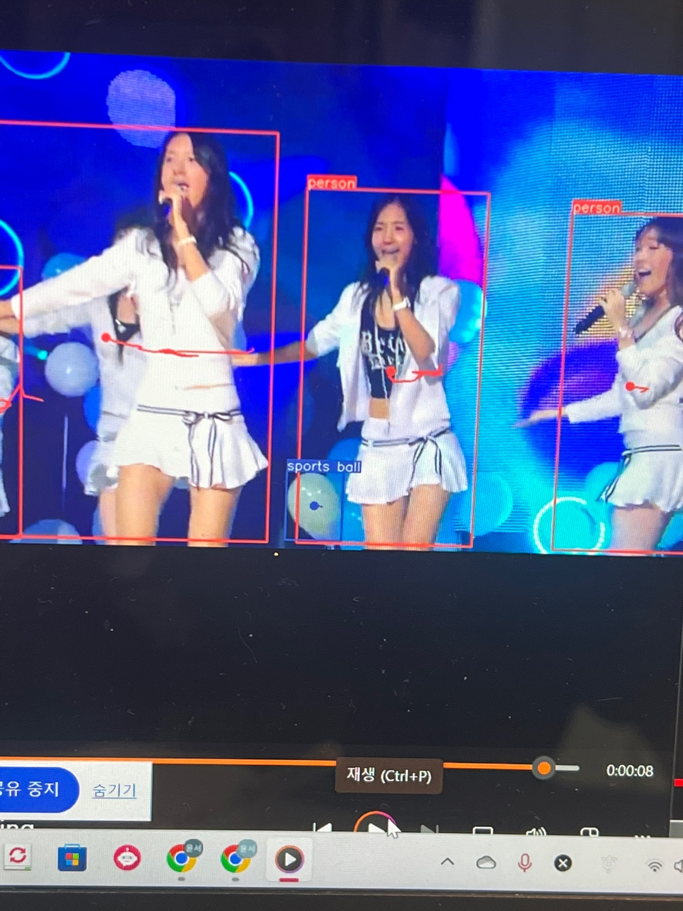
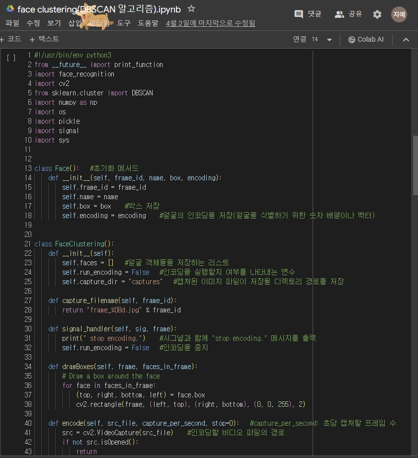

숏폼 제작 웹사이트(진로탐색프로젝트)
| 맡은 일 | 팀장, AI파트, 백엔드 보조 |
| 개발 기간 | 3월 ~ 6월(1학기) |
| 학점 구분 | 3학점(전공) |

동영상을 넣으면 인물을 인식해 숏폼을 만들어주는 웹사이트 프로젝트를
진행하고 있습니다.
알고리즘은 CNN을 사용하고 있으며, YOLO 모델과
DeepSort 모델을 섞은 모델을 파인튜닝 하는 과정입니다.
처음 계획과 달리, 정확도가 낮아 face_clustering을 이용한 모델도 제작 중입니다.
face_clustering